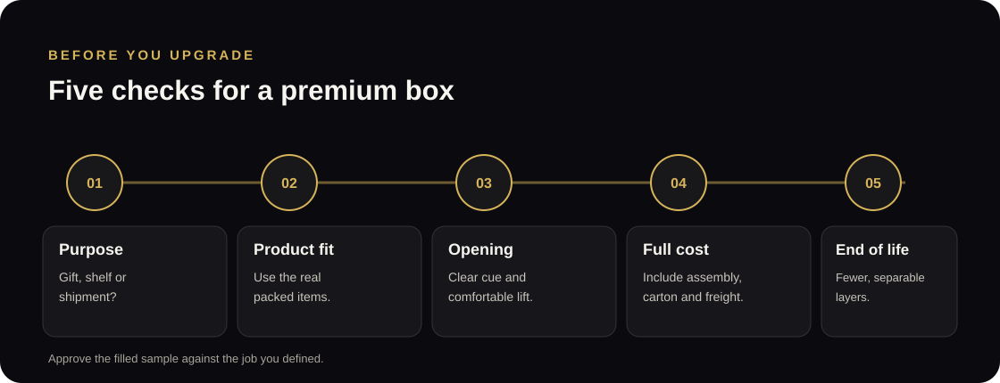
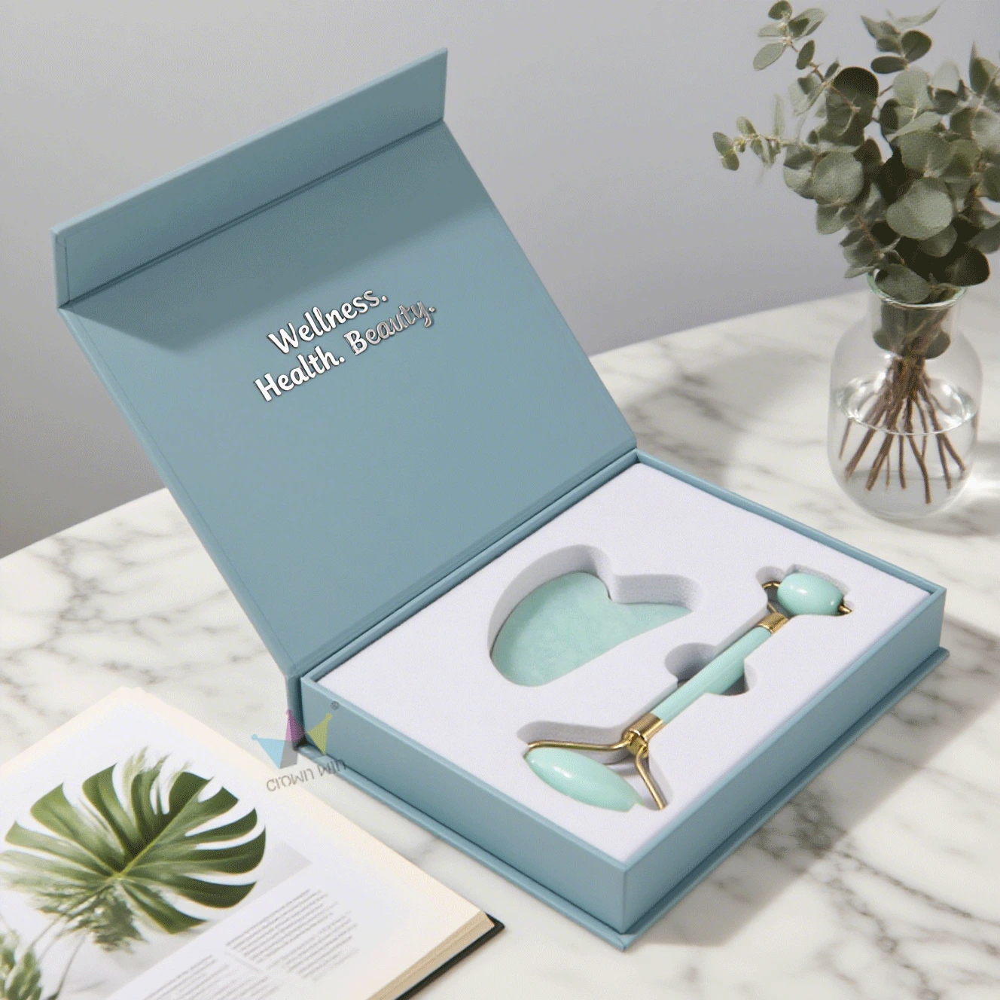
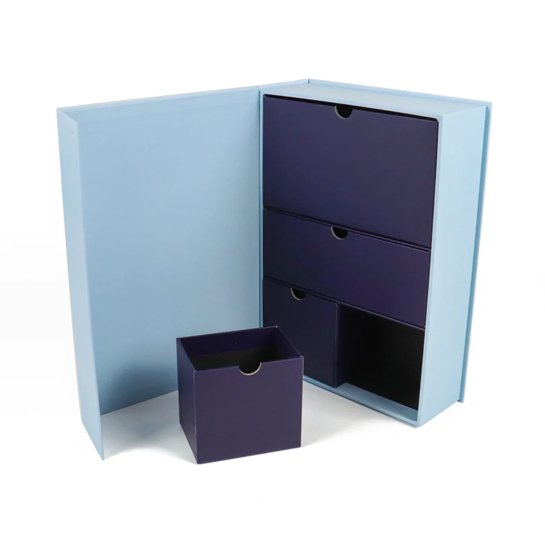

Is Premium Packaging Worth It? A Practical Checklist for Gift Boxes
Use product fit, opening, shipping and total packout cost to decide which upgrades deserve a place in your box.
Short answer: a custom gift box is worth considering when it solves a clear job for your product, such as presenting a gift set, holding several items in place or making a retail display easier to understand. A logo, foil detail or magnetic closure alone is not a business case. Compare the complete packed order, then review a filled sample for access, protection and disposal.

What do packaging discussions on Reddit reveal?
Public design critiques on Reddit show why the word premium is not enough to judge a box. In one r/PackagingDesign discussion about a magnetic gift box, the buyer liked the look but described a tight product fit and an unclear opening point. Replies discussed how the user would find the opening edge and lift the product out. The practical question is not whether magnets look expensive; it is whether the intended customer can open the finished pack without forcing the lid or damaging the contents.
A separate packaging critique for a small brand raised a different set of decisions: whether the presentation box was also being used to ship the order, where a shipping label would sit, whether the product fit and whether every wrapping layer had a job. A 2026 chocolate-box design thread showed the other side: a creator described a more involved opening experience for a box intended to introduce a product line to influencers and distributors.
These are individual examples, not a representative consumer study or evidence that a particular box increases sales. They point to useful questions for a buyer: what is the box for, how will it be opened, and which parts will the customer keep?
Start with the job the box needs to do
Write down the main use before choosing finishes. A presentation box for a gift set may need a clean reveal and a place for each product. A box that travels through parcel networks also needs a separate plan for the shipping carton, label and cushioning. A retail pack may need the front panel and product information to read clearly on a shelf.
One package does not automatically need to do all three jobs. If a branded presentation box will sit inside a plain outer shipper, evaluate those two layers separately. If the presentation box itself will go through delivery, test the shipping label position and the surface that will meet handling. Avoid placing important artwork where a carrier label or tape will cover it.

Can the customer understand how to open it?
The first interaction is part of the design. A flush magnetic edge, hidden tab or tight insert can look neat in a render yet be confusing when someone handles the real box. Give the hand a clear place to start: an accessible edge, a lift ribbon, a tab or another opening cue that suits the structure.
Check what happens after the lid opens. Can each item be lifted out without pinching a label, pushing against a pump or turning the box upside down? Can the customer put the items back if the box is intended for storage or gifting? Ask someone who has not seen the design to open and repack the filled sample. Watch for hesitation, forced grip or parts that need a tool.

Which upgrades deserve their cost?
Compare each feature against a specific need. A shaped insert may help organize a multi-item set; interior printing may carry a message that belongs inside the box; a ribbon pull may make a close-fitting tray easier to lift. If two features do the same job, test the simpler option first.
| Feature | May be useful when | Check on the sample |
|---|---|---|
| Magnetic closure | The opening style suits a gift or presentation format. | Can the user find the opening edge and lift the lid without pulling on the wrong panel? |
| Custom insert | Several products need a planned arrangement or separate spaces. | Does each packed item fit, stay in place and come out comfortably? |
| Foil, embossing or interior print | A particular panel or message supports the intended brand presentation. | Is the finish on the panel customers will see, and will a label or sleeve hide it? |
| Extra tissue, sleeve or outer box | The layer protects, separates, presents or ships the product. | Can you explain the job of every layer, and how the customer will sort or reuse it? |
Premium details are easier to evaluate when you compare two complete specifications: one with the must-have features and one with the optional upgrades. Ask the supplier to quote the same quantity, packed dimensions, materials and delivery scope for each version. Include assembly or kitting work and outer-carton space in your comparison; a unit price alone does not describe the full packout.
How should you test a premium box before ordering?
- Use the final product: place the actual items, caps, sleeves and inserts in the sample. Substitutes can hide fit or access problems.
- Open and remove every item: check the opening cue, finger space, lift tabs and order of removal.
- Pack it as the customer will receive it: include the presentation box, outer shipper, cushioning, labels and any instruction card.
- Review handling needs separately: a desk check does not establish transit performance. Agree any route-specific shipping checks before production.
- Record the approved version: note dimensions, materials, finish, insert layout and any changes made after the sample.
A physical sample is for checking the agreed design. It does not by itself prove that a parcel will survive every shipping route or that a packaging change will improve sales. Keep those questions separate and decide what evidence would answer each one.
When is a simpler package the better choice?
A plain or lightly branded option may be the better starting point when the product already has its own retail package, the buyer mainly needs a safe shipper, storage space is limited or the order quantity makes special finishes hard to justify. You can still make a restrained design intentional with one branded panel, a printed card or a useful insert, depending on the product and the supplier’s available options.
For a premium gift set, a presentation box can make more sense when the package is part of the gift itself or when the products need an organized display. The decision should follow the sales channel, product value, packout and customer expectation—not a general rule that more decoration means more value.
Frequently asked questions
Does premium packaging increase sales?
These Reddit discussions do not establish a sales effect, and a well-finished sample is not proof of a conversion lift. If sales impact is the question, compare customer response or order economics using your own data after the package is in use.
Is a magnetic box automatically a premium choice?
No. A magnetic closure is one structural option. The finished box still needs suitable dimensions, an understandable opening point, a usable insert and a confirmed material and finish specification.
Can a presentation box also be the shipping box?
Sometimes, but test it as the actual shipping pack. Confirm label placement, surface protection, cushioning and delivery handling with the intended route. A presentation sample alone is not a shipping qualification.
What should I send when asking for a custom gift-box quote?
Share product dimensions and weight, quantity, destination, target delivery date, artwork or reference images, the intended use and any sample requirements. For insert planning, see our custom box insert guide; for box styles, compare the gift-box structure guide.
Sources and limits
This article uses three public r/PackagingDesign threads as qualitative examples: a magnetic box that was difficult to open, a small brand’s packaging critique and a chocolate presentation box designed for product introductions. Reddit posts reflect individual experiences and design opinions; they are not a survey, technical test or sales study.
For related planning, read what to include in a packaging brief and the factors in a custom cosmetic-box quote. When you are ready to compare specifications, send a packaging enquiry.
Let’s develop your packaging.
Send product dimensions, quantity, artwork and delivery requirements to start a specification-based enquiry.
→ Request a Custom Quote